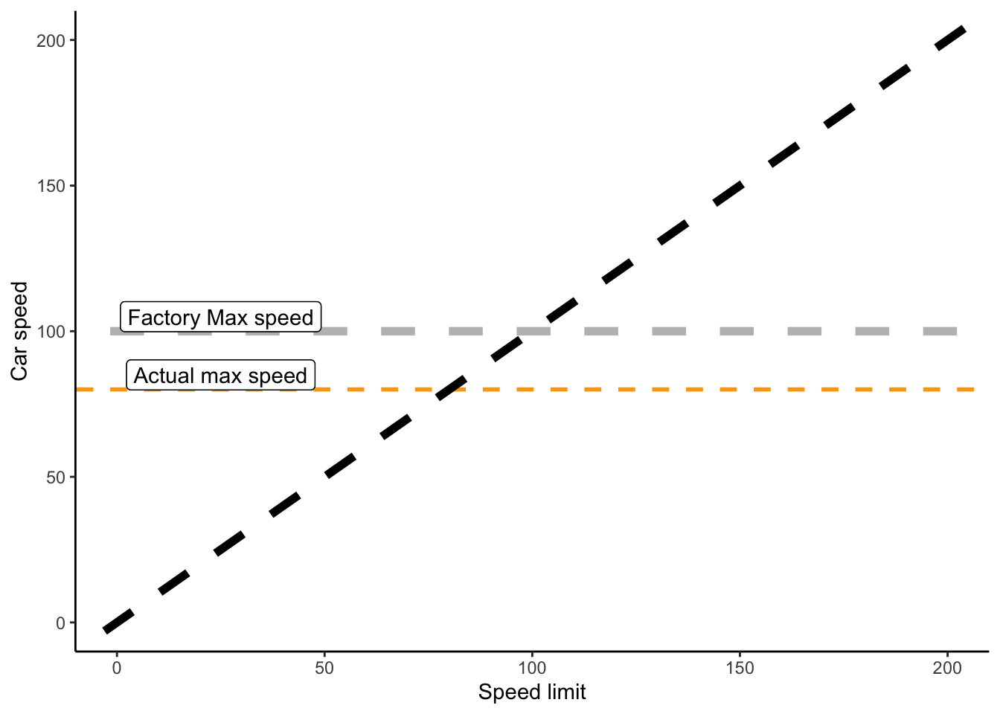
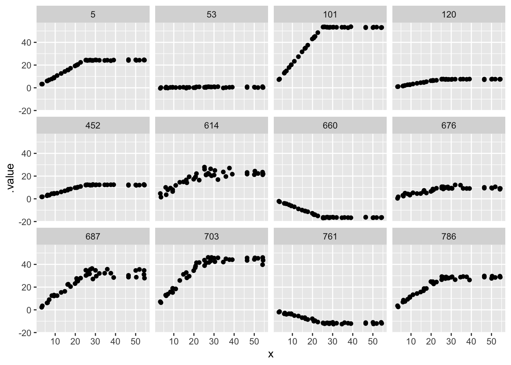

library(ggplot2)
library(tidyverse)
library(tidybayes)
library(cmdstanr)Two (or more) relationships
In breakpoint regression, we think that the relationship between two things can be described by two lines which alternate at a specific point.
When might this happen? One case is when a rate is determined by the minimum value of two functions1. For an example, consider cars driving down a series of roads. The roads vary in their speed limit, and each car is driven by very lawful drivers who always drive precisely the speed limit
tibble(x = 0:1, y = 0:1) |>
ggplot(aes(x = x, y = y)) +
geom_abline(slope = 1, intercept = 0) +
labs(x = "speed limit", y = "Car speed")However, some of these highways have VERY high speed limits. The cars, however, can’t keep up: eventually they hit their max speed. When that happens, the lawful drivers hold steady at the fastest speed their car can maintain. Together, you get a kind of “hockey stick” shape:
tribble(~ limit, ~ max,
0, 0,
200, 200) |>
ggplot(aes(x = limit, y = max)) +
geom_point(col = "white") +
geom_abline(slope = 0, intercept = 100, lty = 2, lwd = 2, col = "grey") +
geom_label(aes(x = 10, y = 105, label = "Max speed")) +
geom_abline(slope = 1, intercept = 0, lty = 2, lwd = 2) +
theme_classic() +
labs(x = "Speed limit", y = "Car speed")Not so fast!
Not every car is going to go at the exact manufacturers maximum speed! When (in my imaginary example) manufacturers release a new kind of car, they test a sample of cars to measure their maximum speed. Therefore we know the max speed (with some error) for that brand of car. However, the realized max speed for any specific car in the wild will be lower than this value. This could be caused by a host of unmeasured factors, such as that particular car’s defects, the kind of care it has received, etc
tribble(~ limit, ~ max,
0, 0,
200, 200) |>
ggplot(aes(x = limit, y = max)) +
geom_point(col = "white") +
geom_abline(slope = 0, intercept = 100, lty = 2, lwd = 2, col = "grey") +
geom_label(aes(x = 25, y = 105, label = "Factory Max speed")) +
geom_abline(slope = 0, intercept = 80, lty = 2, lwd = 1, col = "orange") +
geom_label(aes(x = 25, y = 85, label = "Actual max speed")) +
geom_abline(slope = 1, intercept = 0, lty = 2, lwd = 2) +
theme_classic() +
labs(x = "Speed limit", y = "Car speed")
Write that in mathematics
for one car, driving on different roads.
- We label the different roads \(i\)
- \(\tau\) is the maximum speed of this particular kind of car
- \(M\) is a bunch of measurements of the car’s max speed (based on factory cars)
- \(p\) is the proportion of that maximum that our actual car has
\[ \begin{align} Y_i &\sim \text{Normal}(\mu_i, \sigma)\\ M &\sim \text{Normal}(\tau, \sigma_m)\\ \mu_i & = \begin{cases} X_i & \text{if } X_i \leq p\tau \\ p\tau & \text{if } X_i > p\tau \end{cases} \\ \text{logit}(p) &\sim \text{Normal}(2, .5) \\ \tau &\sim \text{Normal}(...) \\ \sigma_m &\sim \text{Exponential}(...) \\ \sigma &\sim \text{Exponential}(...) \end{align} \]
Simple Stan code with prior predictions
breakpoint_B <- cmdstan_model(here::here("posts/2023-07-05-breakpoint/breakpoint_B.stan"))
breakpoint_Bdata {
int n;
vector[n] x;
real B;
}
// transformed data {
// real M = max(x);
// }
parameters {
real b2;
real<lower=0> sigma;
}
model {
b2 ~ normal(1, 1);
sigma ~ exponential(1);
}
generated quantities {
vector[n] y;
for( i in 1:n){
if (x[i] < B) {
y[i] = normal_rng(x[i]*b2, sigma);
} else {
y[i] = normal_rng(B*b2, sigma);
}
}
}xvar <- runif(42, min = 1, max=55)
breakpoint_B_prior <- breakpoint_B$sample(chains=1,
data = list(x = xvar,
n = 42,
B = 25))Running MCMC with 1 chain...
Chain 1 Iteration: 1 / 2000 [ 0%] (Warmup)
Chain 1 Iteration: 100 / 2000 [ 5%] (Warmup)
Chain 1 Iteration: 200 / 2000 [ 10%] (Warmup)
Chain 1 Iteration: 300 / 2000 [ 15%] (Warmup)
Chain 1 Iteration: 400 / 2000 [ 20%] (Warmup)
Chain 1 Iteration: 500 / 2000 [ 25%] (Warmup)
Chain 1 Iteration: 600 / 2000 [ 30%] (Warmup)
Chain 1 Iteration: 700 / 2000 [ 35%] (Warmup)
Chain 1 Iteration: 800 / 2000 [ 40%] (Warmup)
Chain 1 Iteration: 900 / 2000 [ 45%] (Warmup)
Chain 1 Iteration: 1000 / 2000 [ 50%] (Warmup)
Chain 1 Iteration: 1001 / 2000 [ 50%] (Sampling)
Chain 1 Iteration: 1100 / 2000 [ 55%] (Sampling)
Chain 1 Iteration: 1200 / 2000 [ 60%] (Sampling)
Chain 1 Iteration: 1300 / 2000 [ 65%] (Sampling)
Chain 1 Iteration: 1400 / 2000 [ 70%] (Sampling)
Chain 1 Iteration: 1500 / 2000 [ 75%] (Sampling)
Chain 1 Iteration: 1600 / 2000 [ 80%] (Sampling)
Chain 1 Iteration: 1700 / 2000 [ 85%] (Sampling)
Chain 1 Iteration: 1800 / 2000 [ 90%] (Sampling)
Chain 1 Iteration: 1900 / 2000 [ 95%] (Sampling)
Chain 1 Iteration: 2000 / 2000 [100%] (Sampling)
Chain 1 finished in 0.0 seconds.breakpoint_B_prior variable mean median sd mad q5 q95 rhat ess_bulk ess_tail
lp__ -2.00 -1.69 0.99 0.71 -3.84 -1.05 1.00 423 391
b2 0.98 0.97 0.91 0.93 -0.56 2.57 1.00 589 609
sigma 0.99 0.64 1.02 0.66 0.05 3.15 1.00 609 346
y[1] 24.52 23.87 22.87 23.49 -14.30 64.14 1.00 592 572
y[2] 24.58 24.27 22.87 23.19 -13.87 63.73 1.00 585 609
y[3] 3.59 3.42 3.56 3.53 -2.18 9.59 1.00 573 617
y[4] 24.55 24.04 22.91 23.51 -14.53 63.83 1.00 599 581
y[5] 24.70 24.28 22.82 22.93 -14.38 64.15 1.00 598 501
y[6] 15.98 15.66 14.87 14.93 -9.47 42.02 1.00 595 607
y[7] 24.55 24.02 22.78 23.27 -13.91 63.94 1.00 586 572
# showing 10 of 45 rows (change via 'max_rows' argument or 'cmdstanr_max_rows' option)plot it
prior_draws <- breakpoint_B_prior |>
tidybayes::gather_draws(y[i], ndraws = 12) |>
mutate(x = xvar[i])
prior_draws |>
ggplot(aes(x = x, y = .value)) + geom_point() +
facet_wrap(~.draw)
Rewriting this with step()
I learned from PhD student Dominique Caron that breakpoint regression can be written in brms using step(). This is described in this forum discussion and demonstrated in Stan code here. The Stan manual discusses step() among other logical functions
breakpoint_step_prior <- cmdstanr::cmdstan_model(
here::here("posts/2023-07-05-breakpoint/breakpoint_step_prior.stan"))
breakpoint_step_priordata {
int n;
vector[n] x;
real B;
}
parameters {
vector[n] y;
real<lower=0> sigma;
}
transformed parameters {
vector[n] x2;
for (i in 1:n){
x2[i] = step(B - x[i]);
}
}
model {
vector[n] mu;
mu = B + (x - B) .* x2;
y ~ normal(mu, sigma);
sigma ~ exponential(1);
}set.seed(4812)
xvar <- runif(42, min = 1, max=55)
breakpoint_step_prior_samples <- breakpoint_step_prior$sample(chains=1,
data = list(x = xvar,
n = 42, B = 33), refresh = 0L)Running MCMC with 1 chain...
Chain 1 finished in 0.6 seconds.Warning: 1 of 1 chains had an E-BFMI less than 0.2.
See https://mc-stan.org/misc/warnings for details.prior_draws <- breakpoint_step_prior_samples |>
tidybayes::gather_draws(y[i], ndraws = 12) |>
mutate(x = xvar[i])
prior_draws |>
ggplot(aes(x = x, y = .value)) + geom_point() +
facet_wrap(~.draw)estimating breakpoints with some prior knowledge
We assume here that we have some unmeasured maximum. in my car example, the maximum speed of each kind of car is measured at the factory, by taking a random sample of cars and measuring their max speeds
## take just one
one_dataset <- prior_draws |>
arrange(.draw) |>
head(42)
breakpoint_step_meas <- cmdstanr::cmdstan_model(
here::here("posts/2023-07-05-breakpoint/breakpoint_step_meas.stan"))
breakpoint_step_measdata {
int n;
vector[n] speed_limit;
vector[n] obs_speed;
real max_avg;
real max_sd;
}
parameters {
real max_speed;
real<lower=0> sigma;
}
transformed parameters {
vector[n] V2;
for (i in 1:n){
V2[i] = step(max_speed - speed_limit[i]);
}
}
model {
vector[n] mu;
mu = max_speed + (speed_limit - max_speed) .* V2;
max_speed ~ normal(max_avg, max_sd);
obs_speed ~ normal(mu, sigma);
sigma ~ exponential(1);
}breakpoint_step_meas$sample(data = list(n = 42, speed_limit = one_dataset$x,
obs_speed = one_dataset$.value,
max_avg = 30,
max_sd = 5), refresh = 0L)Running MCMC with 4 sequential chains...
Chain 1 finished in 0.1 seconds.
Chain 2 finished in 0.1 seconds.
Chain 3 finished in 0.1 seconds.
Chain 4 finished in 0.1 seconds.
All 4 chains finished successfully.
Mean chain execution time: 0.1 seconds.
Total execution time: 0.7 seconds.Warning: NAs introduced by coercion
Warning: NAs introduced by coercion variable mean median sd mad q5 q95 rhat ess_bulk ess_tail
lp__ -18.53 -18.23 0.99 0.71 -20.57 -17.57 1.00 1745 1892
max_speed 33.17 33.17 0.23 0.23 32.79 33.54 1.00 2427 2370
sigma 0.93 0.91 0.11 0.10 0.77 1.11 1.00 3100 2272
V2[1] 1.00 1.00 0.00 0.00 1.00 1.00 NA NA NA
V2[2] 1.00 1.00 0.00 0.00 1.00 1.00 NA NA NA
V2[3] 1.00 1.00 0.00 0.00 1.00 1.00 NA NA NA
V2[4] 0.00 0.00 0.00 0.00 0.00 0.00 NA NA NA
V2[5] 1.00 1.00 0.00 0.00 1.00 1.00 NA NA NA
V2[6] 0.00 0.00 0.00 0.00 0.00 0.00 NA NA NA
V2[7] 1.00 1.00 0.00 0.00 1.00 1.00 NA NA NA
# showing 10 of 45 rows (change via 'max_rows' argument or 'cmdstanr_max_rows' option)Objects on the road are slower than they appear
the factory-measured speed is probably a lot higher than the top speed of the average car on the road. lots of factors intervene: the particular car’s defects, its maitenance history, the fuel used, the driver’s skill.
All of these factors will only DECREASE, and never increase, a car’s speed relative to the maximum possible.
breakpoint_step_p <- cmdstanr::cmdstan_model(
here::here("posts/2023-07-05-breakpoint/breakpoint_step_p.stan"))
breakpoint_step_pdata {
int n;
vector[n] speed_limit;
vector[n] obs_speed;
real max_avg;
real max_sd;
}
parameters {
real factory_speed;
real<lower=0> sigma;
real alpha;
}
transformed parameters {
real max_speed;
max_speed = factory_speed * inv_logit(alpha);
vector[n] V2;
for (i in 1:n){
// step() is 0 if speed limit is over the maximum, 0 otherwise
// in other words, it gives the slope
V2[i] = step(max_speed - speed_limit[i]);
}
}
model {
vector[n] mu;
mu = max_speed + (speed_limit - max_speed) .* V2;
factory_speed ~ normal(max_avg, max_sd);
obs_speed ~ normal(mu, sigma);
alpha ~ normal(3, 2);
sigma ~ exponential(1);
}breakpoint_step_p$sample(data = list(n = 42,
speed_limit = one_dataset$x,
obs_speed = one_dataset$.value,
max_avg = 30,
max_sd = 5), refresh = 0L)Running MCMC with 4 sequential chains...
Chain 1 finished in 0.2 seconds.
Chain 2 finished in 0.2 seconds.
Chain 3 finished in 0.2 seconds.
Chain 4 finished in 0.2 seconds.
All 4 chains finished successfully.
Mean chain execution time: 0.2 seconds.
Total execution time: 1.1 seconds.Warning: 80 of 4000 (2.0%) transitions ended with a divergence.
See https://mc-stan.org/misc/warnings for details.Warning: NAs introduced by coercion
Warning: NAs introduced by coercion variable mean median sd mad q5 q95 rhat ess_bulk ess_tail
lp__ -19.12 -18.82 1.21 0.95 -21.47 -17.84 1.01 985 1660
factory_speed 33.84 33.68 0.66 0.57 33.03 35.09 1.01 232 109
sigma 0.93 0.92 0.11 0.10 0.77 1.11 1.01 539 997
alpha 4.45 4.24 1.25 1.28 2.82 6.74 1.01 237 135
max_speed 33.16 33.17 0.24 0.23 32.76 33.55 1.00 2243 727
V2[1] 1.00 1.00 0.00 0.00 1.00 1.00 NA NA NA
V2[2] 1.00 1.00 0.00 0.00 1.00 1.00 NA NA NA
V2[3] 1.00 1.00 0.00 0.00 1.00 1.00 NA NA NA
V2[4] 0.00 0.00 0.00 0.00 0.00 0.00 NA NA NA
V2[5] 1.00 1.00 0.00 0.00 1.00 1.00 NA NA NA
# showing 10 of 47 rows (change via 'max_rows' argument or 'cmdstanr_max_rows' option)first thing that doesn’t work well (admittedly, there is nothing in these simulated data to support this)
suggestion that the probability prior is very important
perhaps if the same kind of car travelled on different highways in several different countries? in all countries the car would have the same theoretical maximum, but the difference in country-level factors mean that the proportion \(p\) below that max, where the average car has its top speed, is going to vary.
what other uncertainty is there to include? uncertainty in the speed limit perhaps?
switch for gamma errors
Before advancing model building much farther, I want to correct the error distribution. Speeds might be variable, but they can never be negative!
breakpoint_step_gamma_prior <- cmdstanr::cmdstan_model(
here::here("posts/2023-07-05-breakpoint/breakpoint_step_gamma_prior.stan"))
breakpoint_step_gamma_priordata {
int n;
vector[n] x;
real B;
}
parameters {
vector<lower=0>[n] y;
real<lower=0> sigma;
}
transformed parameters {
vector[n] x2;
for (i in 1:n){
x2[i] = step(B - x[i]);
}
}
model {
vector[n] mu;
mu = B + (x - B) .* x2;
vector[n] beta = mu/square(sigma);
y ~ gamma(mu .* beta, beta);
sigma ~ exponential(1);
}set.seed(4812)
xvar <- runif(42, min = 1, max = 55)
breakpoint_step_gamma_prior_samples <- breakpoint_step_gamma_prior$sample(
chains=1,
data = list(x = xvar,
n = 42, B = 33), refresh = 1000L)Running MCMC with 1 chain...
Chain 1 Iteration: 1 / 2000 [ 0%] (Warmup) Chain 1 Informational Message: The current Metropolis proposal is about to be rejected because of the following issue:Chain 1 Exception: gamma_lpdf: Random variable[1] is inf, but must be positive finite! (in '/var/folders/x7/l08zn2396g797m5ws54np_6w0000gp/T/Rtmp5fMbyc/model-5cb742e1f51c.stan', line 20, column 2 to column 30)Chain 1 If this warning occurs sporadically, such as for highly constrained variable types like covariance matrices, then the sampler is fine,Chain 1 but if this warning occurs often then your model may be either severely ill-conditioned or misspecified.Chain 1 Chain 1 Informational Message: The current Metropolis proposal is about to be rejected because of the following issue:Chain 1 Exception: gamma_lpdf: Random variable[1] is inf, but must be positive finite! (in '/var/folders/x7/l08zn2396g797m5ws54np_6w0000gp/T/Rtmp5fMbyc/model-5cb742e1f51c.stan', line 20, column 2 to column 30)Chain 1 If this warning occurs sporadically, such as for highly constrained variable types like covariance matrices, then the sampler is fine,Chain 1 but if this warning occurs often then your model may be either severely ill-conditioned or misspecified.Chain 1 Chain 1 Informational Message: The current Metropolis proposal is about to be rejected because of the following issue:Chain 1 Exception: gamma_lpdf: Random variable[4] is inf, but must be positive finite! (in '/var/folders/x7/l08zn2396g797m5ws54np_6w0000gp/T/Rtmp5fMbyc/model-5cb742e1f51c.stan', line 20, column 2 to column 30)Chain 1 If this warning occurs sporadically, such as for highly constrained variable types like covariance matrices, then the sampler is fine,Chain 1 but if this warning occurs often then your model may be either severely ill-conditioned or misspecified.Chain 1 Chain 1 Informational Message: The current Metropolis proposal is about to be rejected because of the following issue:Chain 1 Exception: gamma_lpdf: Shape parameter[1] is 0, but must be positive finite! (in '/var/folders/x7/l08zn2396g797m5ws54np_6w0000gp/T/Rtmp5fMbyc/model-5cb742e1f51c.stan', line 20, column 2 to column 30)Chain 1 If this warning occurs sporadically, such as for highly constrained variable types like covariance matrices, then the sampler is fine,Chain 1 but if this warning occurs often then your model may be either severely ill-conditioned or misspecified.Chain 1 Chain 1 Informational Message: The current Metropolis proposal is about to be rejected because of the following issue:Chain 1 Exception: gamma_lpdf: Shape parameter[1] is 0, but must be positive finite! (in '/var/folders/x7/l08zn2396g797m5ws54np_6w0000gp/T/Rtmp5fMbyc/model-5cb742e1f51c.stan', line 20, column 2 to column 30)Chain 1 If this warning occurs sporadically, such as for highly constrained variable types like covariance matrices, then the sampler is fine,Chain 1 but if this warning occurs often then your model may be either severely ill-conditioned or misspecified.Chain 1 Chain 1 Informational Message: The current Metropolis proposal is about to be rejected because of the following issue:Chain 1 Exception: gamma_lpdf: Shape parameter[1] is 0, but must be positive finite! (in '/var/folders/x7/l08zn2396g797m5ws54np_6w0000gp/T/Rtmp5fMbyc/model-5cb742e1f51c.stan', line 20, column 2 to column 30)Chain 1 If this warning occurs sporadically, such as for highly constrained variable types like covariance matrices, then the sampler is fine,Chain 1 but if this warning occurs often then your model may be either severely ill-conditioned or misspecified.Chain 1 Chain 1 Informational Message: The current Metropolis proposal is about to be rejected because of the following issue:Chain 1 Exception: gamma_lpdf: Shape parameter[1] is 0, but must be positive finite! (in '/var/folders/x7/l08zn2396g797m5ws54np_6w0000gp/T/Rtmp5fMbyc/model-5cb742e1f51c.stan', line 20, column 2 to column 30)Chain 1 If this warning occurs sporadically, such as for highly constrained variable types like covariance matrices, then the sampler is fine,Chain 1 but if this warning occurs often then your model may be either severely ill-conditioned or misspecified.Chain 1 Chain 1 Informational Message: The current Metropolis proposal is about to be rejected because of the following issue:Chain 1 Exception: gamma_lpdf: Shape parameter[1] is inf, but must be positive finite! (in '/var/folders/x7/l08zn2396g797m5ws54np_6w0000gp/T/Rtmp5fMbyc/model-5cb742e1f51c.stan', line 20, column 2 to column 30)Chain 1 If this warning occurs sporadically, such as for highly constrained variable types like covariance matrices, then the sampler is fine,Chain 1 but if this warning occurs often then your model may be either severely ill-conditioned or misspecified.Chain 1 Chain 1 Informational Message: The current Metropolis proposal is about to be rejected because of the following issue:Chain 1 Exception: gamma_lpdf: Shape parameter[1] is inf, but must be positive finite! (in '/var/folders/x7/l08zn2396g797m5ws54np_6w0000gp/T/Rtmp5fMbyc/model-5cb742e1f51c.stan', line 20, column 2 to column 30)Chain 1 If this warning occurs sporadically, such as for highly constrained variable types like covariance matrices, then the sampler is fine,Chain 1 but if this warning occurs often then your model may be either severely ill-conditioned or misspecified.Chain 1 Chain 1 Informational Message: The current Metropolis proposal is about to be rejected because of the following issue:Chain 1 Exception: gamma_lpdf: Shape parameter[1] is inf, but must be positive finite! (in '/var/folders/x7/l08zn2396g797m5ws54np_6w0000gp/T/Rtmp5fMbyc/model-5cb742e1f51c.stan', line 20, column 2 to column 30)Chain 1 If this warning occurs sporadically, such as for highly constrained variable types like covariance matrices, then the sampler is fine,Chain 1 but if this warning occurs often then your model may be either severely ill-conditioned or misspecified.Chain 1 Chain 1 Iteration: 1000 / 2000 [ 50%] (Warmup)
Chain 1 Iteration: 1001 / 2000 [ 50%] (Sampling)
Chain 1 Iteration: 2000 / 2000 [100%] (Sampling)
Chain 1 finished in 0.5 seconds.Warning: 1 of 1 chains had an E-BFMI less than 0.2.
See https://mc-stan.org/misc/warnings for details.prior_draws <- breakpoint_step_gamma_prior_samples |>
tidybayes::gather_draws(y[i], ndraws = 12) |>
mutate(x = xvar[i])
prior_draws |>
ggplot(aes(x = x, y = .value)) +
geom_point() +
facet_wrap(~.draw)Footnotes
see Leibig’s Law of the Minimum, and also Dune↩︎